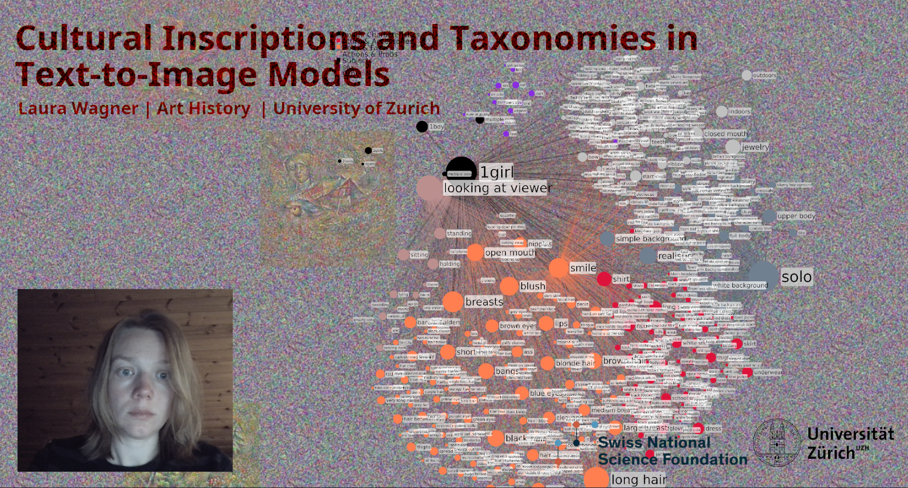
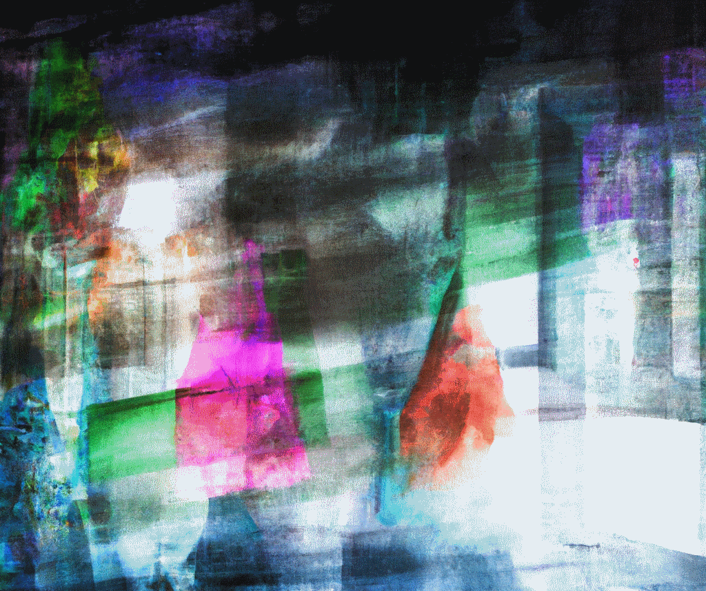
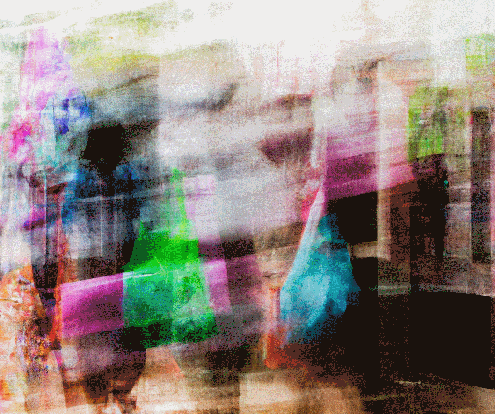
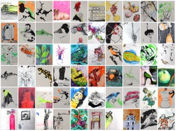
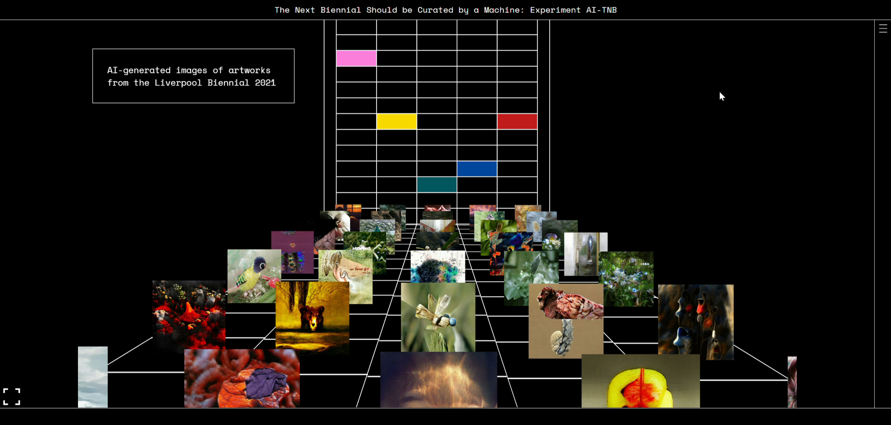
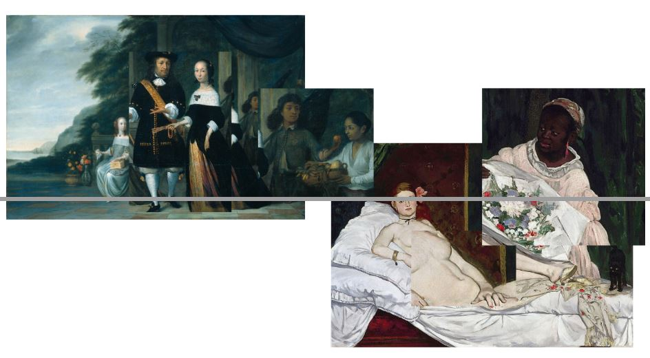
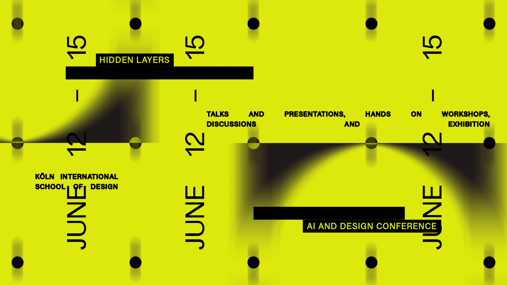
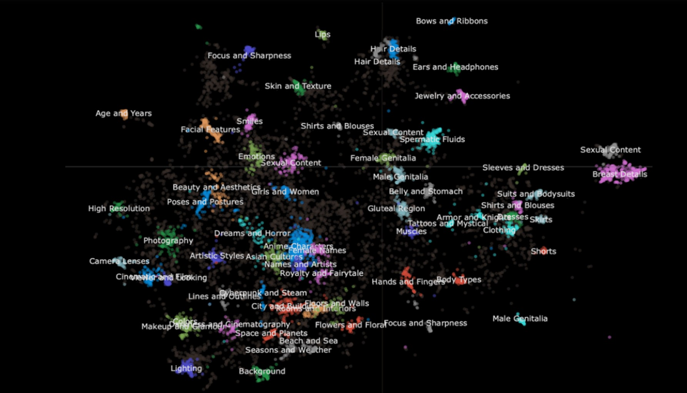

“The Canon of Latent Spaces: How Large AI Models Encode Art and Culture” is a 4-year long project funded by Swiss National Science Foundation. The project started in November of 2023. It is hosted by the Institute of Art History and is supported by the Digital Society Initiative of the University of Zurich.
The project’s aim is to explore various aspects of multimodal AI technologies in the context of art and culture. Multimodal foundation and generative AI models are currently garnering enormous attention not only within the AI community, but also among a broad scope of scholars, artists and practitioners fascinated by this technology. The range of potential applications of these technologies is wide and manifold, but so are their various cultural, societal, ethical and political implications.
Trained on millions of image-text pairs sampled from the internet, multimodal foundation models integrate and propagate various biases, often including dominant societal perspectives and selective cultural memories. These models encode numerous and complex associations which exist between data items collected at a certain point in time. However, how those associations are integrated within the numerical hyperdimensional feature spaces of such models is yet to be fully understood. In other words, the question of what constitutes the canon of the latent spaces of multimodal foundation and generative AI models and how to systematically explore them, emerges as a new and exciting research challenge.
The goal of this project is to conduct a comprehensive analysis of multimodal AI technologies, particularly focusing on questions relating to explainability and the critical exploration of their development and use, as well as their impact on artistic and cultural production. The project aims to integrate diverse outlooks and incite interdisciplinary debates on the globally relevant topic of AI-based content generation and its far-reaching impact on the future of art, culture and society.

Laura Wagner presented the talk Cultural Inscriptions and Taxonomies in Text-to-Image Models at the AISthesis – Network for Research on the Aesthetics of AI Imagery meeting.
Maria-Teresa De Rosa Palmini joined the D3 Center at Osaka University as a visiting researcher from February to April 2026 under the supervision of Dr. Noa Garcia , focusing on the systematic evaluation and benchmarking of sociocultural biases in text-to-image models.
Laura Wagner led the workshop Latent Vandalism: The Joy of Productive Damage to Text-to-Image Synthesis Pipelines at the Köln International School of Design (KISD), exploring how perturbations in diffusion-based text-to-image models can reveal assumptions and visual norms embedded in generative AI systems.

A one-day symposium featuring presentations and discussions on how artificial intelligence shapes and transforms the creation, interpretation, and study of art and culture.

Call for contributions: We invite scholars, artists, and practitioners to engage with key questions at the intersection of AI, culture, and interpretation. Submission deadline: 22 October 2025.

In October 2025 Laura Wagner spent one week as a visiting researcher at Uppsala University, Digital Humanities Department, where she collaborated with Prof. Amanda Wasielewski and held a workshop titled Synthesizing Style: Authorship and Consent in Text-to-Image AI Personalizations.

Eva Cetinic gave an invited talk titled Challenges and Perspectives in Generative AI and Art at the panel discussion AI in Art, held on September 25 at ETH Zurich and organized by the Swiss Study Foundation (Schweizerische Studienstiftung).
PhD student Nicola Fanelli from the University of Bari, Italy, will be visiting our team from September 2025 to March 2026 and will be involved in ongoing research activities.
Laura Wagner and Maria-Teresa De Rosa Palmini participated in and presented their research at the Safe and Trusted AI Summer School , held at Imperial College London.

Laura Wagner and Maria-Teresa De Rosa Palmini presented their research at the Biases in Computer Technology and AI Workshop (DHCH 2025), hosted by the Istituto Svizzero in Rome.
Maria-Teresa De Rosa Palmini and Laura Wagner participated in the Una Europa Summer School on AI and Creativity

Maria-Teresa De Rosa Palmini gave a talk titled Surface Aesthetics and Prompting in AI-Generated Art and Laura Wagner held a workshop Stable Diffusion dis-confusion at the Hidden Layers 2024 conference on AI & design

Eva Cetinic gave a talk titled Cultural Aspects of Text-to-Image Generation: Inner and Outer Dynamics at the Ringvorlesung Kulturanalyse jetzt! Kulturanalytische Perspektiven auf KI at the University of Zurich (UZH)

Eva Cetinić’s research focuses on the intersection of deep learning, explainable AI, and digital humanities. Prior to leading this project, she was a postdoctoral fellow at the Digital Society Initiative at UZH and a postdoctoral fellow at the Center for Digital Visual Studies at UZH. Before joining the University of Zurich, she was a postdoctoral researcher in Digital Humanities and Machine Learning at the Department of Computer Science, Durham University, UK and as a postdoctoral researcher and professional associate at the Ruđer Boškovic Institute in Zagreb. She holds a Ph.D. in Computer Science from Faculty of Electrical Engineering and Computing, University of Zagreb.
She has been active in the field of AI and art for more than a decade, exploring how computer vision and deep learning methods can be used for computational analysis of artworks. Her current research interests specialize in investigating the cultural, ethical, and societal implications of emerging multimodal generative AI models.
Contact: eva.cetinic@uzh.ch
Laura is a former project member of the research project KITeGG with a background in interdisciplinary design. Since 2024, she pursues her PhD at University of Zurich. Her research is embedded within the project by focusing on investigating the implications of creating and sharing personalized, open-source text-to-image/video generative AI models.
Specifically, her research effort aims to identify how broader systemic issues, such as the practice of appropriating unlicensed and/or violent material in open-source multi-modal AI systems, cascades into the communities that adopt, modify and share them.Contact: laura.wagner@khist.uzh.ch
Since February 2024, Maria-Teresa has been a PhD Student at the Digital Society Initiative of the University of Zurich. She holds a Bachelor's degree in English Language and Literature from the National and Kapodistrian University of Athens and a Master's degree in Natural Language Processing from the University of Konstanz. Her current research seeks to unravel the diverse cultural, ethical, and societal implications of advancing multimodal deep learning models. Specifically, her work focuses on examining the explainability and potential biases of these models, alongside their capabilities in risk mitigation, cultural analysis, and artistic exploration